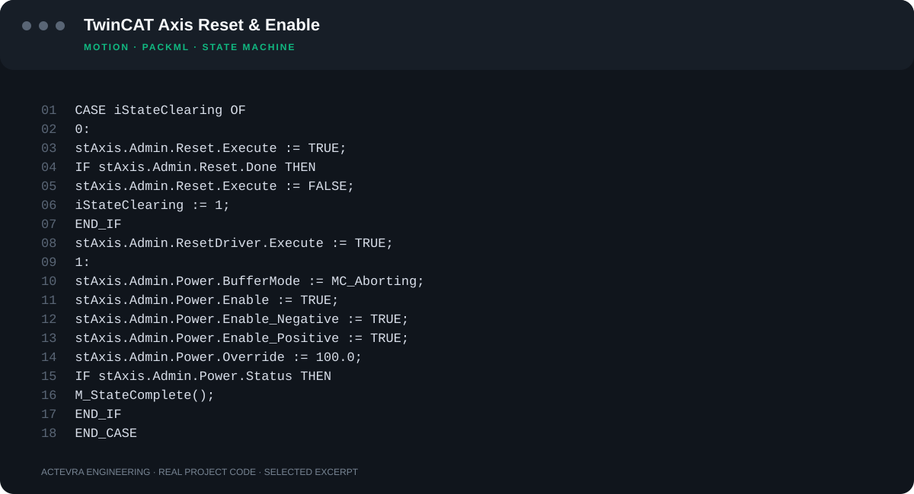
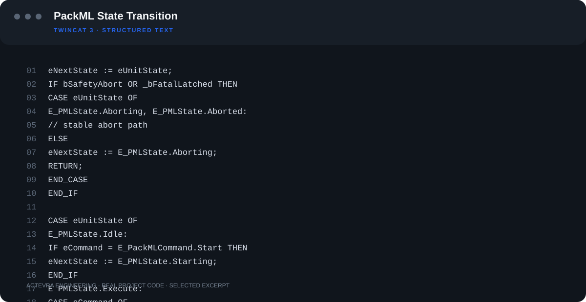
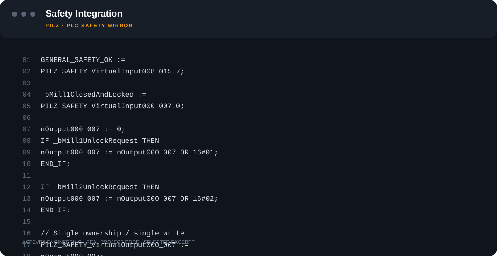

Automation & PLC
Machine and process control, state machines, PackML, EtherCAT, drive integration, recipes and batch sequences.
TwinCAT 3 · PackML · EtherCATINDUSTRIAL AUTOMATION & SOFTWARE
We treat PLC, SCADA, robotics, motion control, functional safety and electrical design as parts of one system. From design to commissioning, we build automation systems that can be operated, maintained and diagnosed on site.
Good automation does more than produce. It shows why a fault occurred, remains understandable during maintenance, and can be extended years later.
Machine and process control, state machines, PackML, EtherCAT, drive integration, recipes and batch sequences.
TwinCAT 3 · PackML · EtherCATOperator interfaces, alarms, trends, production records, audit trails, recipes, reporting and PLC data integration.
.NET / WPF · ADS · SQL · OPC UARobot cells, servo axes, PLC–robot communication, motion sequences and commissioning.
KUKA · ABB · Servo · CiA 402Electrical schematics, field I/O, cabinet design, safety PLCs, E-Stops, guard locking, STO/SS1 and safe-stop concepts.
EPLAN · Pilz · SICK · TwinSAFEFor machine builders, we treat automation as a reusable product platform that can adapt to variants and remain maintainable in the field. Process and machine-control software is delivered in a documented, sustainable structure.

Recipe and batch systems need more than transferring setpoints to the PLC. We design parameter limits, recipe revisions, batch results, production history, alarms and interlocks as one traceable system.
In our PackML-oriented control structure, state transitions, command priorities and safety-driven stops are centralized. This keeps online diagnostics understandable across machine, subsystem and component levels.
The excerpt below is selected from real PackML transition code in our TwinCAT 3 PLC library.

Central PLC + SCADA control for material preparation, dosing, mixing, extrusion and drying.
Synchronized control of dual servo axes, product transfer and process measurements.
PLC coordination of robots, vision, fixtures and process stations.
Multi-axis motion, vacuum, tanks, pumps, valves and temperature control in one cycle.
Working on a similar process?
Explicit state machines.
The active state and the reason a sequence is waiting should be visible online.
Single command owner.
Clear ownership prevents uncontrolled commands from multiple software layers.
Diagnostics first.
Interlocks, communication, safety and device faults should be distinguishable.
Designed for operators.
SCADA should explain what is happening instead of merely displaying PLC variables.
